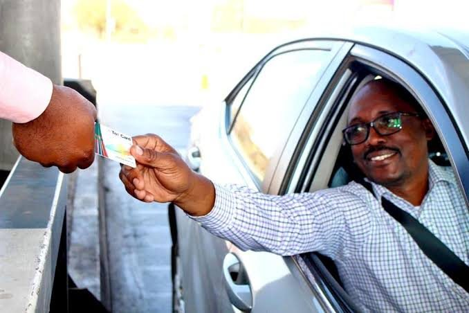

The challenge
What needed to change
Cash at toll plazas is slow for motorists and risky for operators: it takes time to count, invites losses, and delays the moment revenue reaches the road fund.
Zambia's road agency introduced NFC-enabled electronic toll cards, launched nationally on 4 November 2018 at Michael Chilufya Sata Toll Plaza, to make toll payments cashless. A card system is only as good as the processing behind it: every tap at every plaza has to be captured, settled and reconciled accurately, at high volume.

Our solution
What ProBASE delivered
ProBASE provides usage-based transaction processing and end-to-end reconciliation for e-toll card payments. Each card transaction is recorded, processed and matched, so that what motorists paid, what the plazas recorded and what was settled always agree.
The system is built for high volumes: busy plazas generate a constant stream of transactions, and none of them can be lost or double-counted.
How it works
From first connection to everyday operation
- 01
Capture
Card taps at the plaza are recorded as individual transactions the moment they happen.
- 02
Process
Transactions are processed against card balances, with usage-based charging.
- 03
Reconcile
Plaza records, card balances and settlements are matched end to end.
- 04
Report
Operators get accurate, auditable data on toll revenue and card usage.